Here is my project 3. Part A uses a pretrained flow model to denoise an image, sample new ones, and edit images into optical illusions. Part B trains a denoising UNet and a flow matching model on MNIST from scratch. The figures below are my results.
Part A. 1.1 Noisy inputs · 1.2 Gaussian blur · 1.3 One-step · 1.4 Velocity · 1.5 Euler · 1.6 From noise · 2.1 CFG · 3.1 Editing · 3.2 Text edits · 3.3 Anagrams · 3.4 Hybrids
Part B. 1.1 UNet · 1.2 Denoiser · 1.2.1 Training · 1.2.2 Out of distribution · 1.2.3 Pure noise · 2.1 Time conditioning · 2.2 Training · 2.3 Sampling · 2.4 Class conditioning · 2.5 Class training · 2.6 Class sampling
Part A: Exploring the Power of Flow Models
Part A does not train a model. Sampling uses the pretrained PixNerd text-to-image flow model. Sections 1.1 through 1.5 all use my Sphinx photo, center-cropped and resized to 512×512. Unless a later section names a different prompt, the condition is "a high quality photo". Euler sampling uses step size h = 0.02, and the noise seed is 180.
Part A 1.1: Constructing Noisy Training Inputs
Here, we simply follow the process as defined. We use linear interpolation to define the noisy training input, and we draw ε with noise(SEED) so that it is a tensor of the same shape as the image, sampled from a normal distribution N(0, I). The same noise is reused at every time below.
xt = t x1 + (1 − t) ε
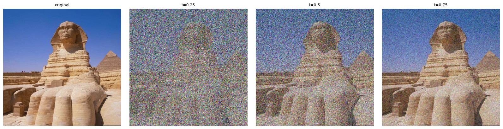
Part A 1.2: Classical Denoising
Here, we want to carry out a thought experiment. Given a noisy image, how exactly can we denoise it? To answer this, and to use the baseline presented to us, we need to first frame the problem correctly. Currently we have interpolated pairs (xt, t) where we want a denoised version. To do this, we should first separate out clearly where the noise is coming from compared to the original image.
xt = t x1 + (1 − t) ε
xt / t = x1 + ((1 − t) / t) ε
Here x1’s contribution to the image is just itself. However, there is still an addition of noise, which we seek to denoise. How exactly do we denoise? As a baseline, we choose to average nearby pixels with a Gaussian blur. Dividing by t restores the image amplitude before the blur. It does not remove the noise.
At each saved time, the blur width was chosen from σ ∈ {1, 2, 4, 8, 16} by the smallest mean squared error against the original. That is σ = 8 at t = 0.25, σ = 4 at t = 0.50, and σ = 2 at t = 0.75.
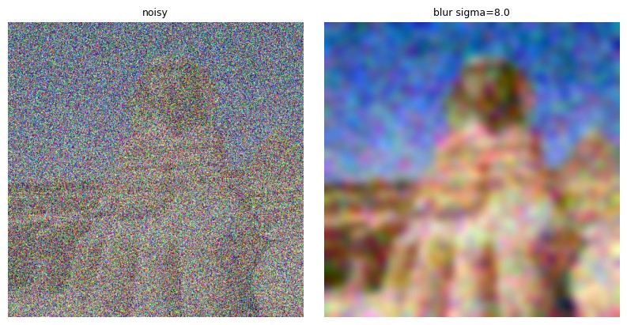
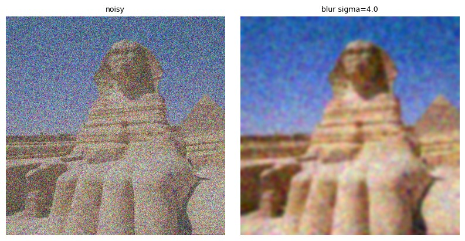
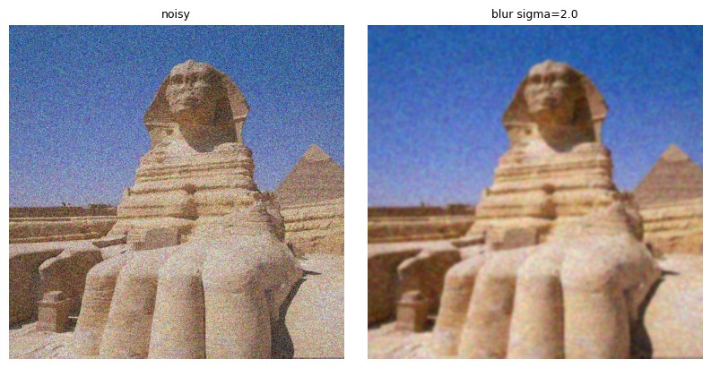
Part A 1.3: One-Step Denoising
In this step, we want to conduct a one-step denoising. Given a trained flow model that predicts a velocity vector toward the original image, we can recover an estimate of x1 in a single jump. Here v is the model’s prediction of x1 − ε, and the model is also given t, so it knows which timestep it is at. The condition c is the embedding of "a high quality photo". Plugging in xt, t, and c gives the one-step solution for each of the three saved images.
x̂1 = xt + (1 − t) vθ(xt, t, c)
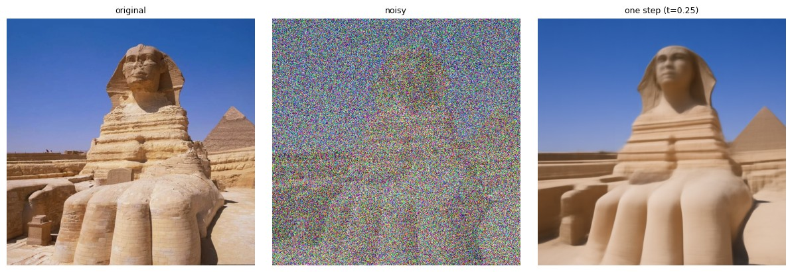
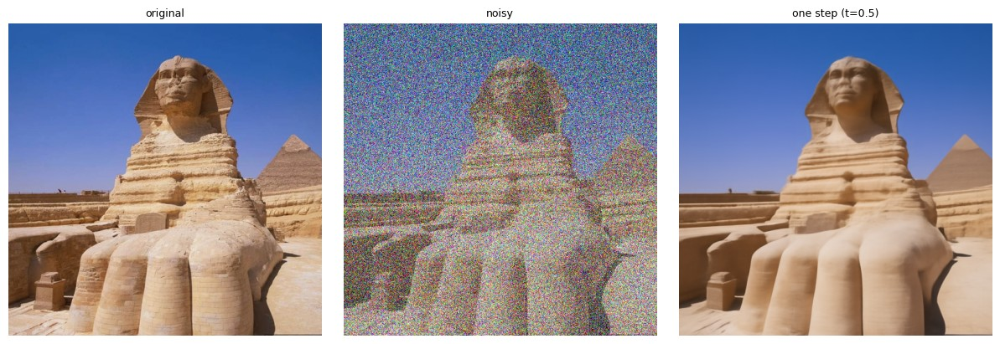
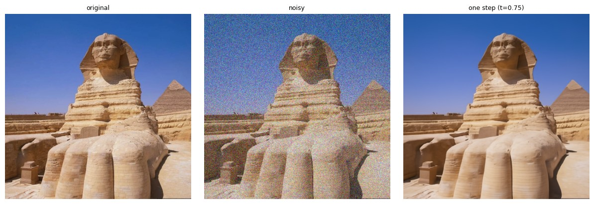
Part A 1.4: Visualizing Velocity
In this part, we want to compare the ground truth and the model predictions for the velocity. Starting from xt, we want to add an update to get to the original image. Using the equation from before, x1 = xt + (1 − t) v, we get (1 − t) v = x1 − xt. The difference is in where the velocity vector is pointing. For the ground truth, it is x1 (the original image) minus ε (the noise added in Section 1.1). For the model, we call predict_velocity(x_t, t, condition). At each time we show xt, the predicted update (1 − t) v̂, the ground-truth update (1 − t) vgt, and the root-mean-square error across the three color channels as a heatmap.
The answer we see is that at very low timesteps, the heatmap shows significantly more differences, with t = 0.25 showing more blue outlines at the edges of the Sphinx. As we transition to t = 0.5, the blue outlines fade, until t = 0.75 where they are very faint. As the original image has a larger share of the noised image, the differences between the ground-truth and predicted velocity get smaller.
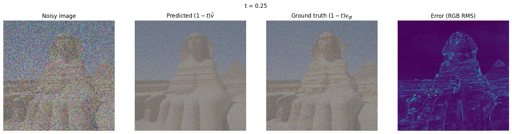
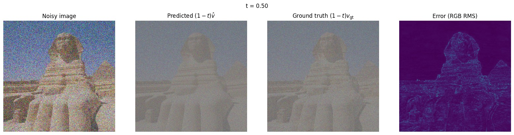
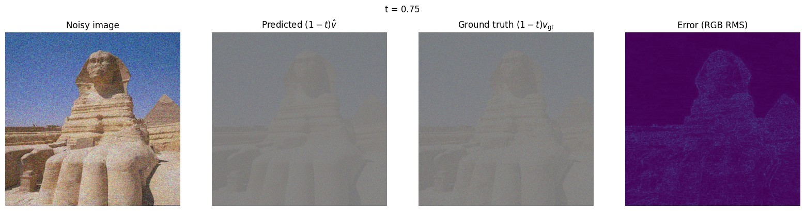
Part A 1.5: Iterative Denoising with Euler Sampling
For this part, we modify the flow step to take discrete steps of size h. We start at the saved t = 0.50 image and take steps of h = 0.02, recomputing the velocity after every step. The last step is shortened if it would pass t = 1.
xt+h = xt + h vθ(xt, t, c)
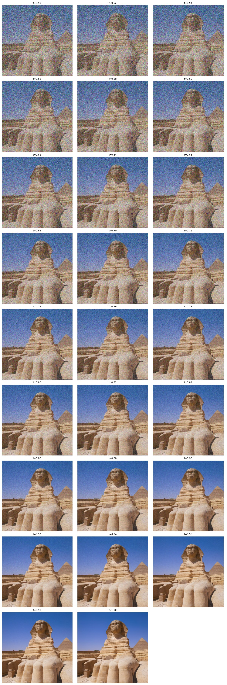
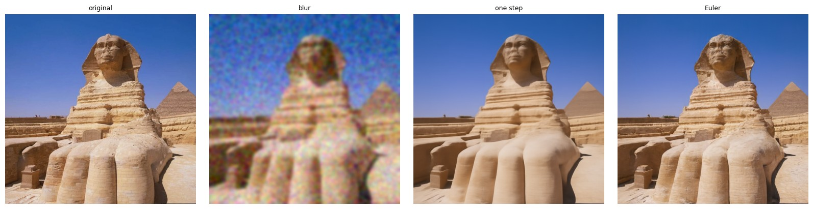
The results are quite interesting. We see how the noise is taken away at each discrete time interval, and the gradual nature of it. Comparing the final results, the blurred version is quite poor, while the difference between the one-step and Euler methods is quite striking. The one-step method shows very smooth lines and texture on the Sphinx. The face is very smoothed over, and the ground has no disjoint texturing. On the other hand, the Euler method shows the superiority of taking many steps. We can see the distinct wear of time on the Sphinx’s face, with uneven textures and horizontal lines. Additionally, the background shows the ruggedness of the desert more clearly.
Part A 1.6: Generating Images from Noise
In this step, we show how completely new images can be generated. Since predict_velocity() comes from an outside model trained on a large set of images, passing in pure noise and running Euler sampling pulls that noise in a new direction at each step, until the final timestep is a “denoised” image. The prompt is "a high quality photo", the start time is t = 0, and the five noises are seeds 180 through 184. All five outputs are faces, but the faces are overall very blurry and indistinct.
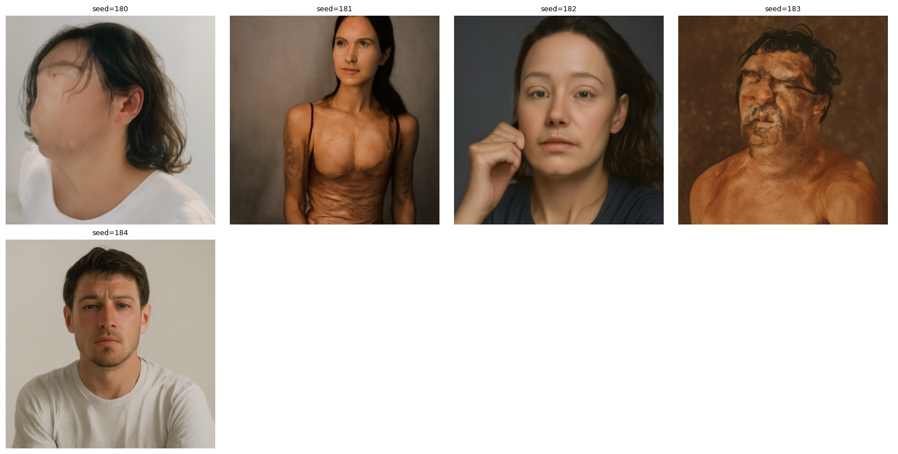
"a high quality photo". No classifier-free guidance.Part A 2.1: Classifier-Free Guidance
In this section we use classifier-free guidance. When flow matching should move noise toward one specific prompt rather than only conditionally denoising as in Section 1.6, CFG is one way to do it. We compute the difference between the conditional velocity and the unconditional velocity. Subtracting vu aims to isolate the direction in which the prompt is distinct from the unconditioned images. Multiplying that difference by w and adding it back to vc gives a velocity more aimed at the prompt.
vcfg = vc + w (vc − vu)
Here we generate five images at w = 7 and h = 0.02, from the same initial noises as Section 1.6. The unconditional branch uses the empty prompt. Compared with Part 1.6, where the faces are overall very blurry and indistinct, the images generated here have very clear features and facial structure, without that immediate blurring. A much better result.
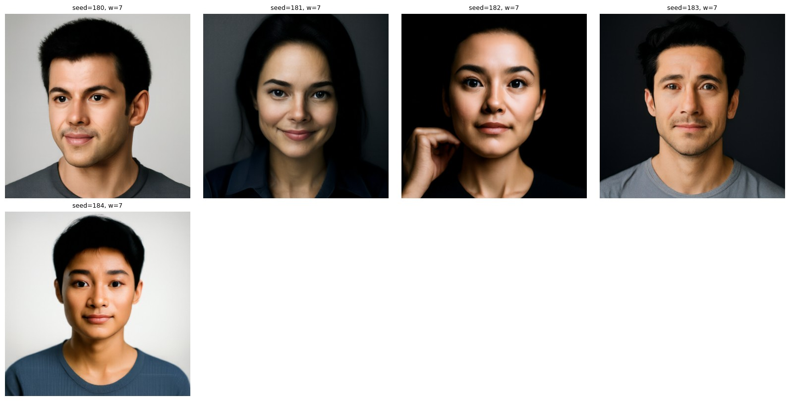
Part A 3.1: Image-to-Image Editing
In this section, we want to do more creative applications. The goal is to take a partially noised image and run Euler steps with CFG, so the model reconstructs new features on the way back to t = 1. At lower starting times, the noise carries more weight, and the final image is distinctly different from the original. When the flow model predicts velocity, it has to be “creative” and make up features from the natural-image manifold, and bring the noised image closer to that manifold. The prompt for every edit in this section is still "a high quality photo", with w = 7 and h = 0.02. The starting times are 0.02, 0.04, 0.06, 0.10, 0.14, 0.25, and 0.50.
Over here, we can see the outputs of the Campanile, the Sphinx, and the James Bond headshot. The Campanile is quite interesting: at early times, the noise is high and the image extrapolates toward a conical shape reminiscent of a water tower or a nuclear plant. As time goes on, the structure lengthens and gradually sheds its circular shape, becoming more blocky while adding features such as the top window. The most interesting, in my opinion, is the Sphinx. At t = 0.02, the noise extrapolates to a large head. At t = 0.04 to t = 0.06, the blurry Sphinx head seems to inform the flow model to create a human shape on a sand-colored background. As the starting time increases, the bottom half of the Sphinx becomes more visible, while the head structure gradually fills in. Finally, for James Bond, the noise at every timestep still lets the flow model create a headshot of a person. As time passes, the features converge toward a more rugged, British face.
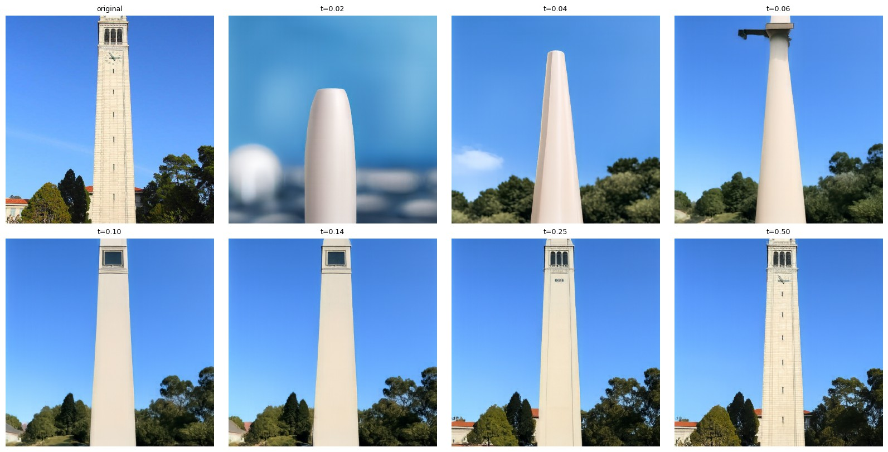
"a high quality photo". Early times turn the tower into a smooth cone. Later times bring the clock and the arches back.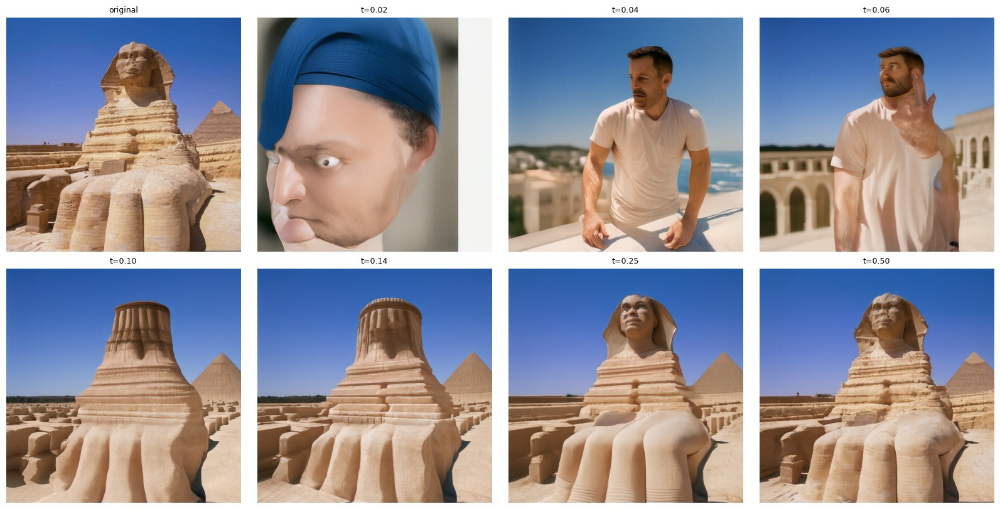
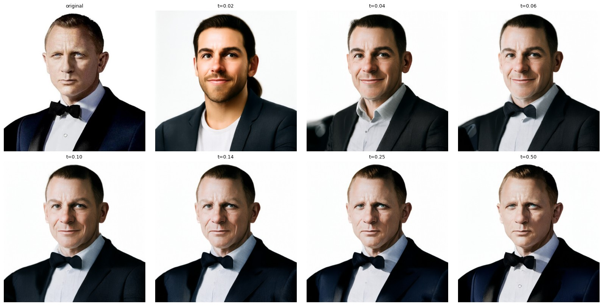
Web image and hand drawings
We completed the same procedure for one web image and two hand-drawn images. This procedure works especially well for input images that are more abstract and have fewer features, because the flow model can extrapolate in many more directions. The inputs are an abstract painting, a drawing of a New York street, and a drawing of a rocket and a cow under a sky.
The outputs are interesting. For the abstract painting, times 0.02 to 0.06 distort the image completely into faces and random objects. Past that, the results start using the color and texture of the painting more concretely. For the drawing of New York, the output is quite strange. Only at times 0.02 and 0.04 do faces pop out of the drawing. At the remaining times it defaults to the drawing’s facade, barely changing across starting times. For the drawing of the cow and the rocket, t = 0.02 to t = 0.06 develops into a book-shaped object, and afterwards the result simply matches the drawing itself.
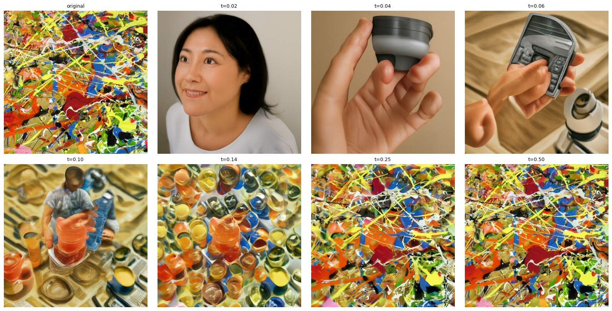
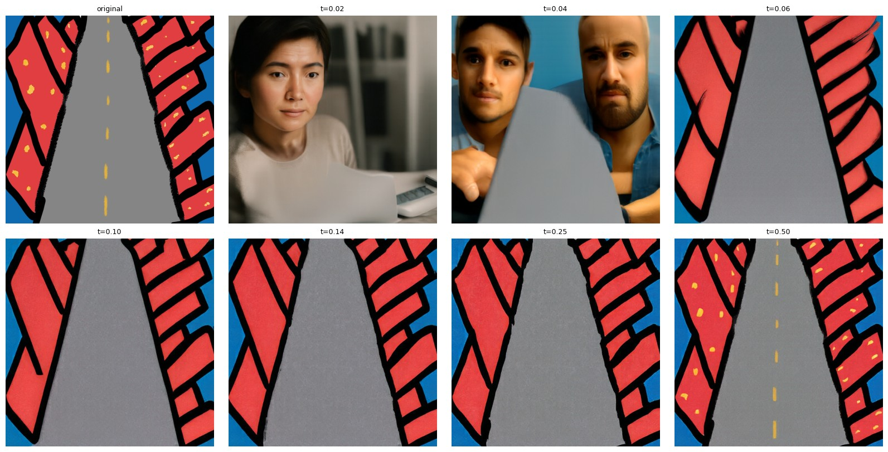
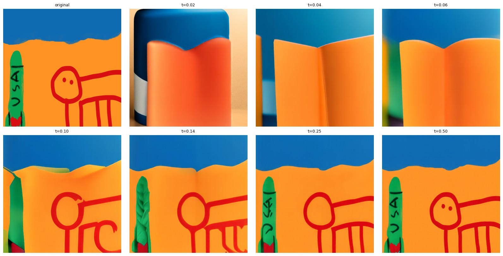
Part A 3.2: Text-Guided Image Editing
In this section, we do the same process as in 3.1, but this time the prompt guides CFG in a chosen direction. We use the same Campanile, Sphinx, and James Bond images, now with the prompts "rocket launch", "biological sphinx", and "green alien", in order to create a rocket, a more biological version of the Sphinx, and a green-alien version of James Bond. The starting times are the same seven values.
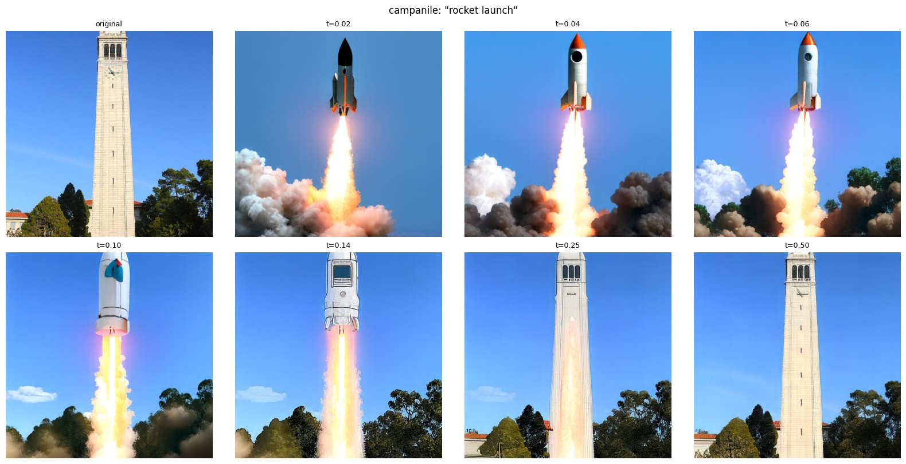
"rocket launch".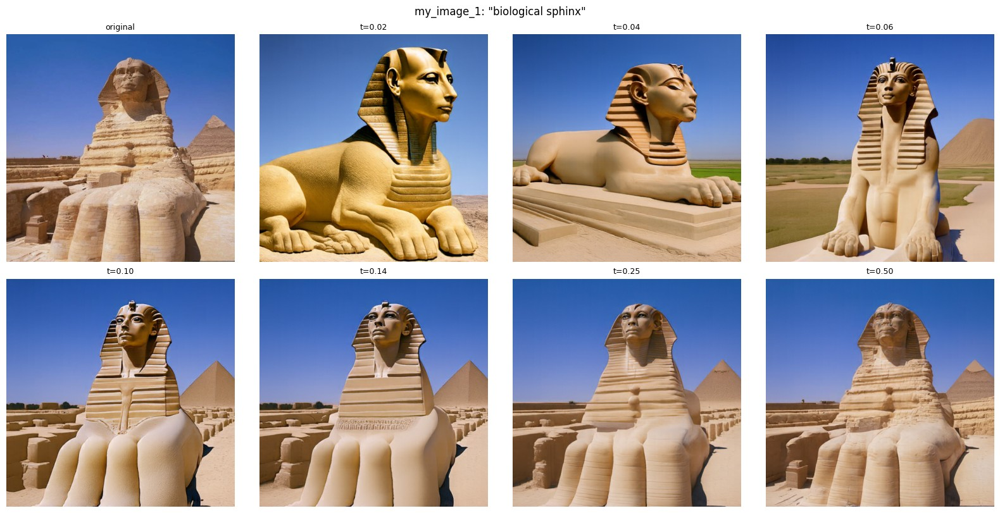
"biological sphinx".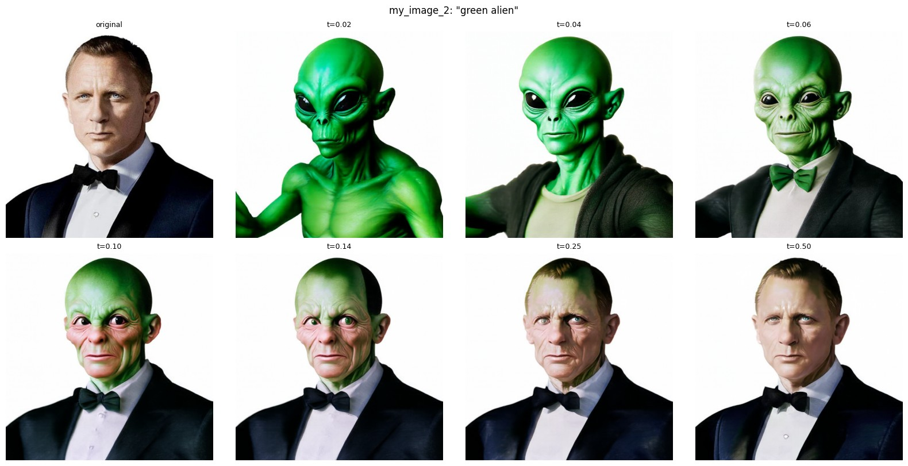
"green alien".Part A 3.3: Visual Anagrams
In this part, we aim to create a visual anagram: an image that reads as one thing upright and as another thing rotated 180°. The spec’s example is an oil painting of an old man that becomes people around a campfire when flipped. Starting from pure noise, we take Euler steps as usual, but with one change. We use an averaged CFG velocity. One velocity is conditioned on the upright prompt. The other takes the image after rotate180, predicts a CFG velocity for the second prompt, and rotates that velocity back. Averaging the two velocities lets the noisy image move, at every Euler step, toward both an upright first prompt and an upside-down second prompt.
v1 = CFG(xt, t, p1)
v2 = flip(CFG(flip(xt), t, p2))
v = (v1 + v2) / 2
We ran this for two pairs: "A snow covered mountain peak, dramatic illustration" with "A massive waterfall cascading down a cliff, dramatic illustration", and "A lithography of a candle" with "A lithography of a flower". The mountain and the waterfall came out very well. The snow at the top of the mountain turns into the foam of the waterfall. The second pair is also interesting. Upright, it is a candle with a wick at the top. Flipped, the wick becomes part of the flower’s stem, and the body of the candle includes the leaves.
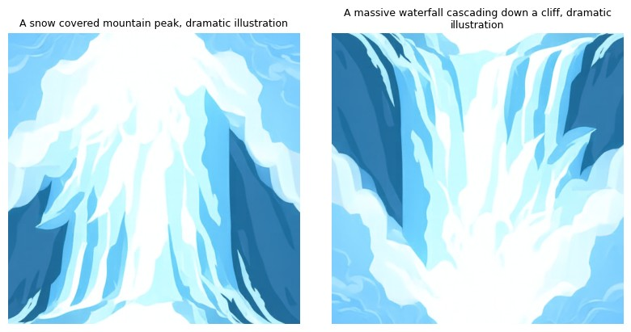
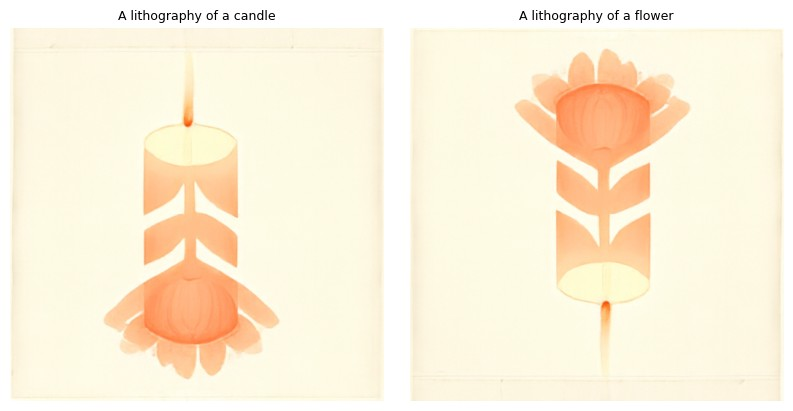
Part A 3.4: Hybrid Images
Our goal in this section is very similar to Project 2. We want a hybrid image from two prompts and Euler steps. As in Section 3.3, we compute a CFG velocity for each prompt. We then merge the two velocities by blending the low frequencies of one with the high frequencies of the other. The composite velocity is what the Euler update follows. Close up, the image should resemble the high-pass prompt. Far away, it should resemble the low-pass prompt. The low-pass is a Gaussian blur with σ = 16, and the high-pass is the velocity minus that blur.
v = flow(v1) + v2 − flow(v2)
For this round, the prompts are "a grayscale rabbit" with "a snowy hillside", and "a grayscale cat face" with "a cluster of clouds". The rabbit and the cat are the low-frequency, distant prompts. The hillside and the clouds are the high-frequency, close prompts. Both images show a similar result. Close up, the hillside is a landscape with a lot of detail, in the shape of a rabbit, and from afar the rabbit appears. The same thing happens for the cat and the clouds: close up we see a collection of clouds, and further away we can see the discernible shape of a cat’s face.
"a snowy hillside"."a grayscale rabbit".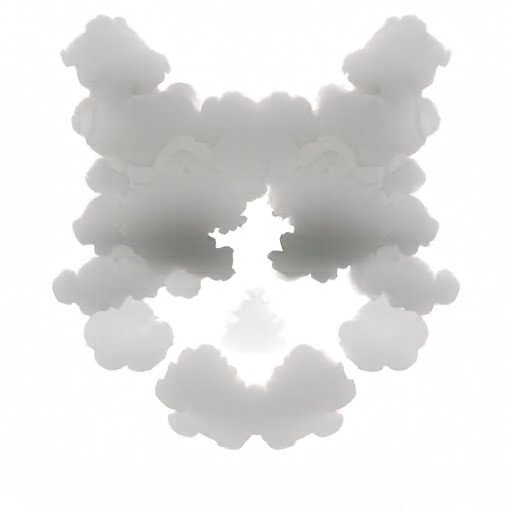
"a cluster of clouds"."a grayscale cat face".Part B: Flow Matching from Scratch
Part B leaves the pretrained model behind. Everything below is trained on MNIST, first as a one-step denoiser and then as a flow matching model.
Part B 1.1: Implementing the UNet
In this part, we have to fully implement the building blocks for the UNet. To do this, we use PyTorch modules such as nn.Conv2d to build the larger blocks: a convolution that changes channels, a downsampling convolution, an upsampling transposed convolution, flatten and unflatten around the 7×7 bottleneck, and a channel-wise concatenation for the skip connections. An MNIST image comes in as 1×28×28, since it is grayscale, and the hidden width used later is D = 128. PyTorch puts the batch at dimension 0, so every channel concatenation is along dimension 1.
Part B 1.2: Using the UNet to Train a Denoiser
So what exactly is a UNet? When we want to isolate specific features in an image, we reduce the resolution through convolution, then build back up. If that process goes well, we can isolate features of the input. But the amount of information lost in the bottleneck is quite large, and the way back up cannot reconstruct the image on its own, so we concatenate the same-resolution features from the way down and use those to reconstruct the image.
For this specific part, we train this UNet as a denoiser. We take a noisy image as input. The UNet isolates features of that noise that it detects are close to a clean MNIST digit, and reconstructs the digit. The loss is an L2 loss between the denoiser output and the clean image.
L = 𝔼z, x ‖ Dθ(z) − x ‖2
Noising process
To prepare training pairs we use z = x + σ ε, where ε ~ N(0, I) and the clean digit is scaled into [0, 1]. Below is a 7, noised at σ = 0.0, 0.2, 0.4, 0.5, 0.6, 0.8, and 1.0. As σ increases, the seven becomes increasingly indistinct.
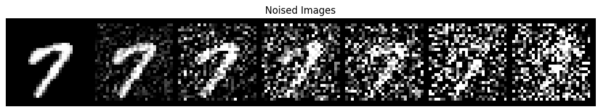
Part B 1.2.1: Training
For this part, we set up the training loop for the UNet denoiser. The settings are a batch size of 256, learning rate 10−4, noise level σ = 0.5, hidden dimension 128, and 5 epochs, optimized with Adam. Noise is sampled fresh every batch. Below is the loss, and then the test-set results after epoch 1 and epoch 5. Each panel is ten test digits: clean on the top row, noisy at σ = 0.5 in the middle, and the denoiser output on the bottom.
The loss plot clearly shows that as the number of optimizer steps increases, the loss decreases steadily. The epoch 1 and epoch 5 outputs are quite interesting. In both epochs, some information is lost. The test set’s rightmost 9 has a mark in its inner circle, and the UNet removes that blemish. The difference between epoch 1 and epoch 5 is not large, but epoch 5 has a marginal increase in quality, with stroke patterns a bit more in line with the original image.
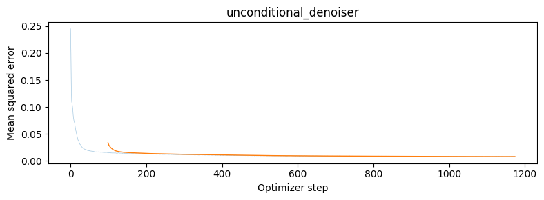
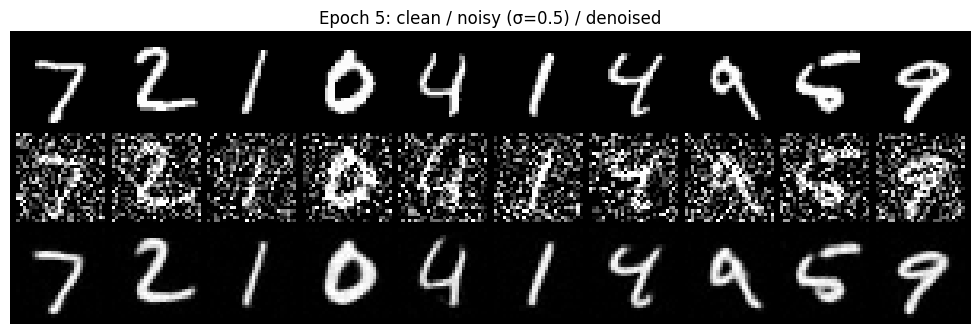
Part B 1.2.2: Out-of-Distribution Testing
Given that the model was trained on σ = 0.5, we now want to ask: if the amount of noise changes, how well does the model denoise? The same ten test digits are used at every σ. Each figure is clean, then noisy at that σ, then denoised.
The results are very interesting. Take σ = 0.5 as the base comparison. As we increase σ, the outputs become progressively wispier and form less structured digits. As we decrease σ, the images start looking more like the test set and produce fewer errors. There is, however, still a tendency to modify the original image, and the same blemish removal on the rightmost 9 continues. The reason is quite interesting. As σ decreases below 0.5, the model perceives the given image as having more noise than it actually does, and so it tends to smooth the lightly noised image toward the average. As σ increases above 0.5, the model still denoises, but it leaves variation from the extra noise because it treats that variation as part of the source image.
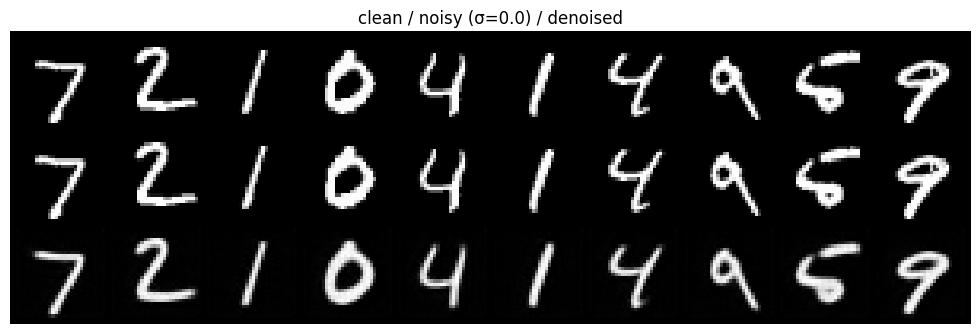
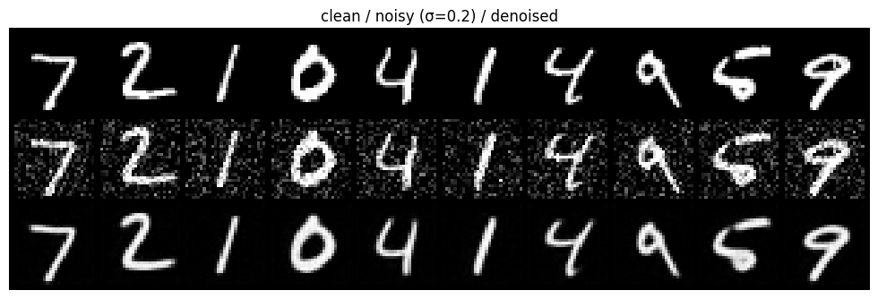
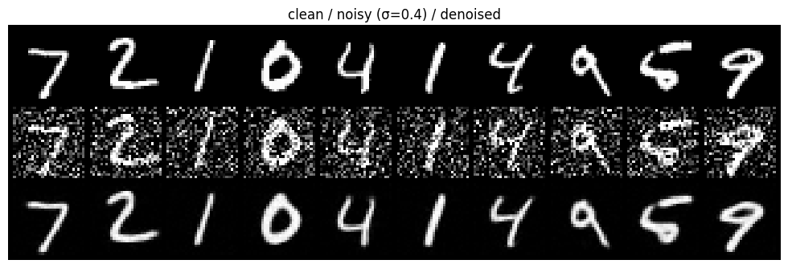
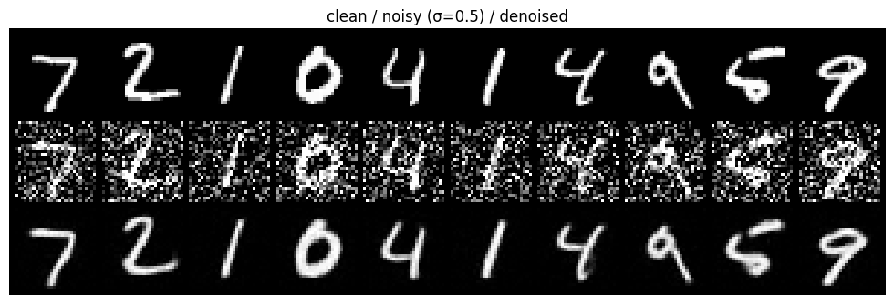
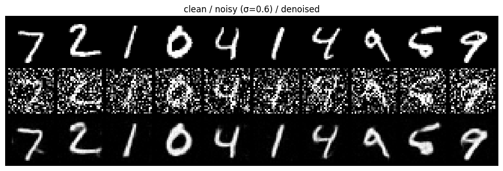
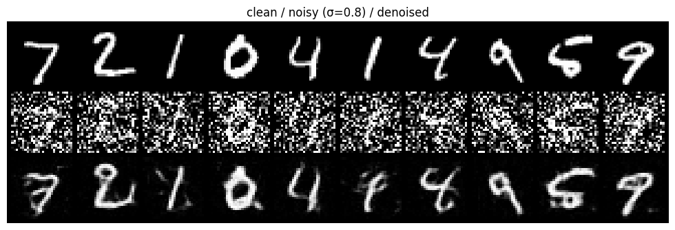
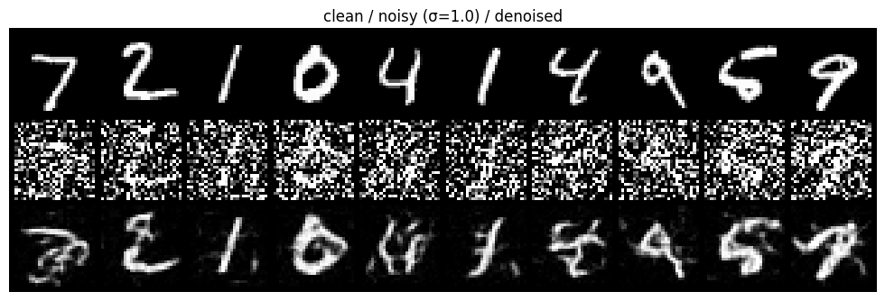
Part B 1.2.3: Denoising Pure Noise
For this part, we instead train a fresh denoising UNet to map pure Gaussian noise to a clean digit. The architecture and the training settings match Section 1.2.1: D = 128, Adam with learning rate 10−4, batch size 256, and 5 epochs. The input is ε ~ N(0, I), independent of the target digit.
Since the criterion is the MSE between the model’s output and the training image, the model learns to predict the point that minimizes the sum of squared distances to all training examples. This is similar to a centroid in clustering. The centroid here is that of all digits 0–9 in MNIST. In other words, the model learns to push every noise sample toward an image that is a blend of the training images, so that the MSE across training pairs is minimized. The result is the same image for every noise input, with features most reminiscent of a 3 and a 9, because most digits 0–9 overlap that shape on the right side.
The loss plot tells a similar story. As the number of iterations rises, after an initial calibration, there is only slight further optimization. There is nothing left to optimize once the weights map generic noise to that average of the training examples. The only change across later iterations is that more variations of noise are sampled, which finetunes the model for outliers and for the full range of noise drawn from a zero-mean normal distribution.
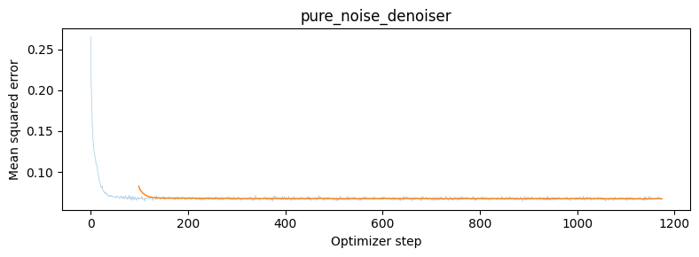
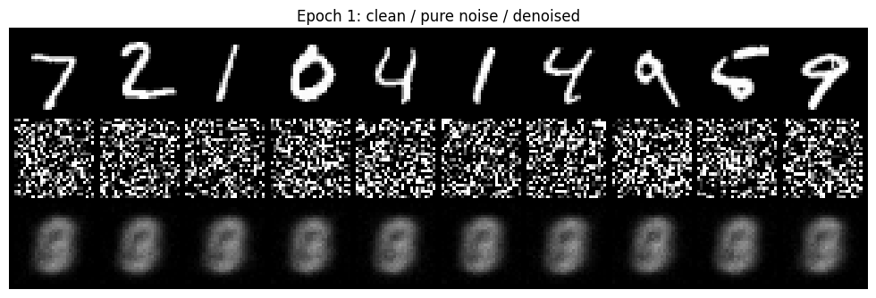
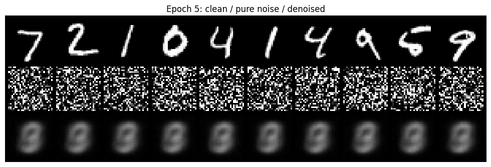
Part B 2: Flow Matching
In this part, we implement flow matching from scratch. Flow matching denoises a pure noise image down to clean data by predicting a velocity, the flow, that moves toward the clean image. With linear interpolation, xt = (1 − t) x0 + t x1, where x0 ~ N(0, I) and x1 is the clean image. Flow is the change in xt with respect to time, which is x1 − x0. The UNet already takes an image, so we also have to feed it the scalar t. The loss is the MSE between the UNet’s prediction and x1 − x0.
xt = (1 − t) x0 + t x1
u(xt, t) = x1 − x0
Part B 2.1: Time Conditioning
So how exactly do we condition the UNet on t? From the spec, we use an FCBlock of two linear layers, and we replace the unflatten and the first upsampling block with modulated versions that multiply by the FCBlock output. That is how t enters the UNet. The scalar t is normalized to [0, 1] before the embedding. The hidden width for this network is D = 64.
Part B 2.2: Training the Time-Conditioned UNet
To implement the training loop, we first need time_fm_forward and time_fm_sample. time_fm_forward takes the UNet, samples t ~ U[0, 1] and x0 ~ N(0, I), and builds xt = (1 − t) x0 + t x1. The UNet predicts unet(x_t, t), and the loss is the MSE against x1 − x0.
The training settings are a hidden dimension of 64, 50 time steps, a learning rate of 10−2, 10 epochs, and a batch size of 64. The optimizer is Adam, and the learning rate follows an exponential schedule with γ = 0.11/10, stepped once per epoch.
As we can see from the loss plot, as the number of iterations increases there is a sharp decline at the beginning, then a relatively flat period after.
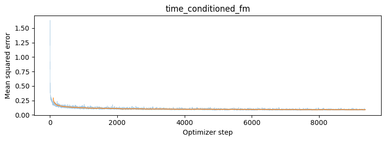
Part B 2.3: Sampling from the Time-Conditioned UNet
To evaluate the model, time_fm_sample draws x1 by Euler integration, xt+h = xt + h · unet(xt, t), across the 50 timesteps. We sample from the checkpoints at epochs 1, 5, and 10.
There is a clear improvement across epochs. At epoch 1, most of the generated images do not form a coherent digit. At epoch 5, there is a sizeable improvement, with many 5s, 4s, and 8s visible, but still a sizeable number of malformed numbers. Epoch 10 has a much larger proportion of readable numbers and fewer mistakes. As the number of epochs increased, the flow matching model got better.
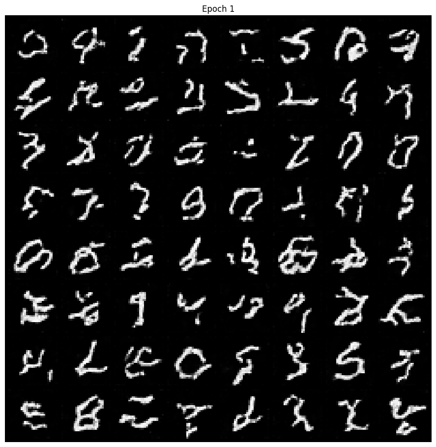
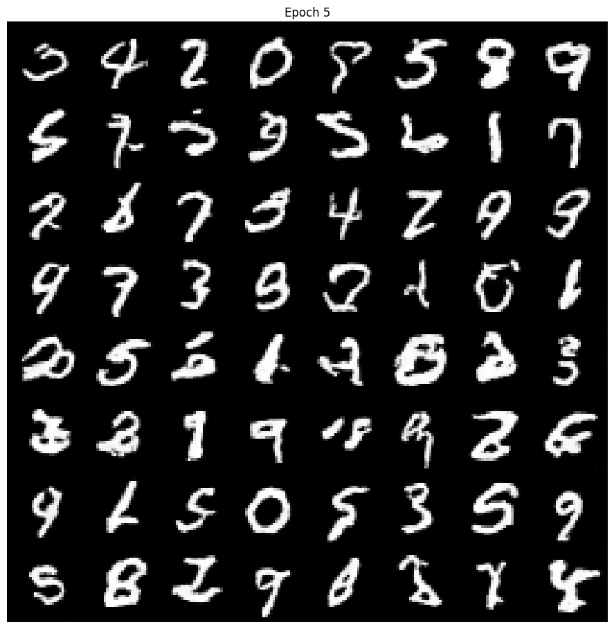
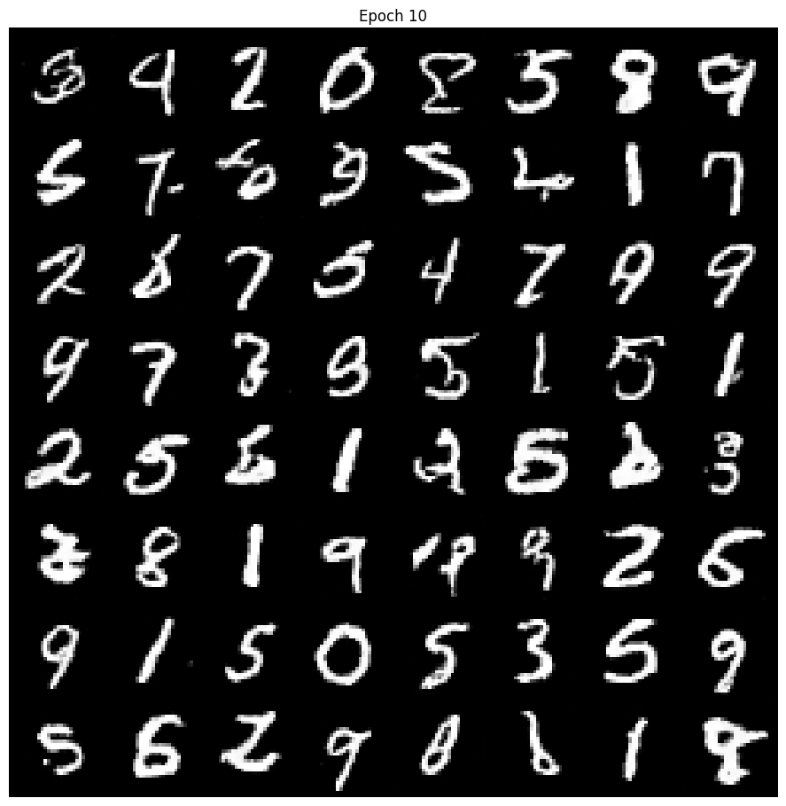
Part B 2.4: Class Conditioning
In this section, we repeat the previous architecture, but we also condition on the digit class c. The modulated unflatten and upsampling blocks become c1 · unflatten + t1 and c2 · up1 + t2. The class goes through the same kind of FCBlock as t. Since c arrives with shape (N,), we use one_hot(c, num_classes=10) to make it (N, 10) before the block, which then produces tensors of shape (N, D, 1, 1) and (N, 2D, 1, 1).
We also need dropout. The model should still work with no class, so 10% of the training examples are passed with the one-hot vector set to 0. That mask is applied inside class_fm_forward.
Part B 2.5: Training the Class-Conditioned UNet
class_fm_forward is the same idea as the time-only forward pass, plus the class label and the dropout. A mask of shape (N,) is 0 for 10% of the batch and 1 otherwise. Training uses D = 64, batch size 64, 10 epochs, and Adam with initial learning rate 10−2. The exponential scheduler uses γ = 0.11/10.
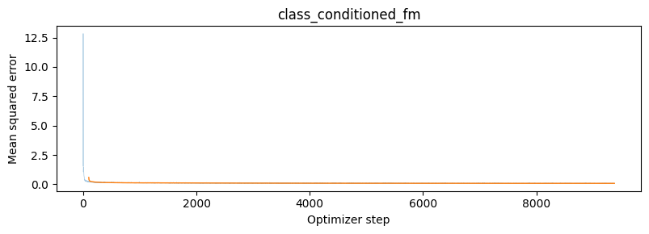
Part B 2.6: Sampling, and Removing the Scheduler
For inference, class_fm_sample changes the Euler step to classifier-free guidance. The guided flow is the unconditional prediction plus γ times the difference between the conditional and unconditional predictions, which pushes the sample toward the requested class. Sampling uses γ = 5, 300 Euler steps, and a fixed seed. Each grid is four instances of every digit, 0 through 9.
vcfg = vuncond + γ (vcond − vuncond)
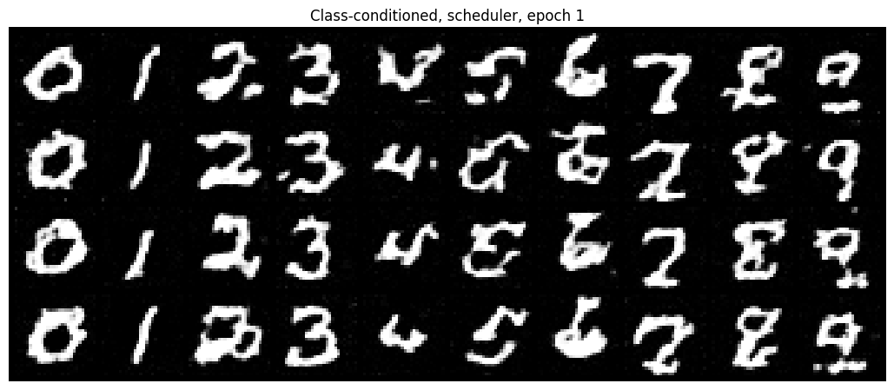
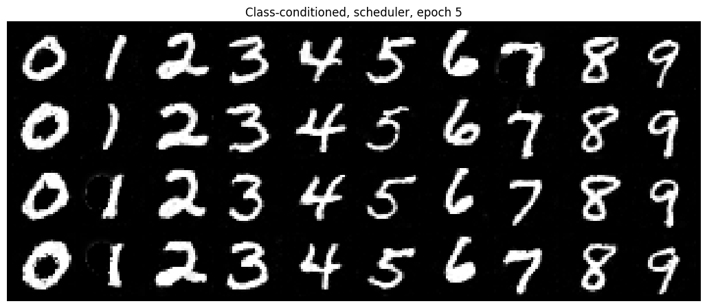
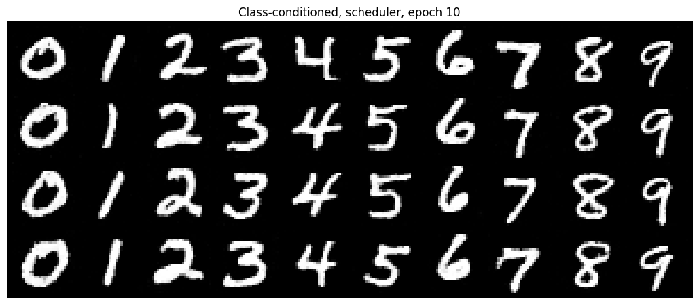
Constant learning rate
This time around, we also compare a run with the scheduler to a run without it. When training starts from a large learning rate, we usually shrink it over the epochs so later updates are smaller and more precise. The exponential scheduler above uses γ = 0.11 / num_epochs, so after 10 epochs the learning rate has decayed by about 10×, from 10−2 down to about 10−3. Instead of that schedule, we can just use a constant learning rate of 10−3. To compensate for the smaller learning rate at the start, I increased the number of epochs from 10 to 15.
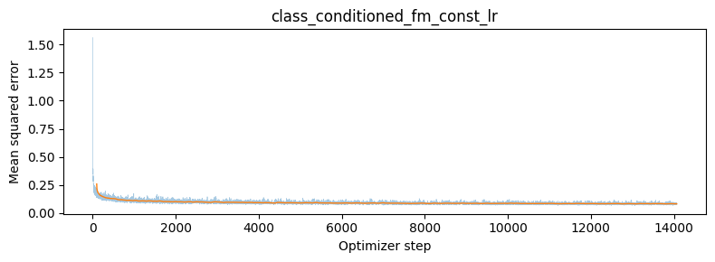
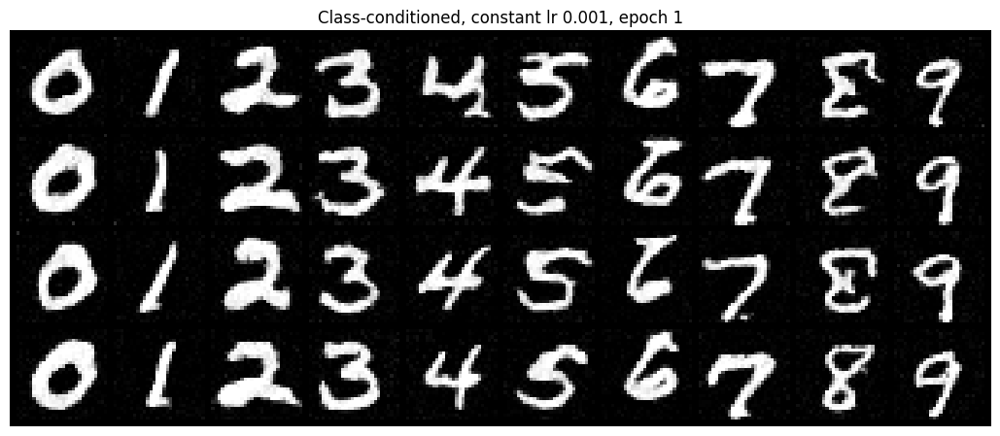
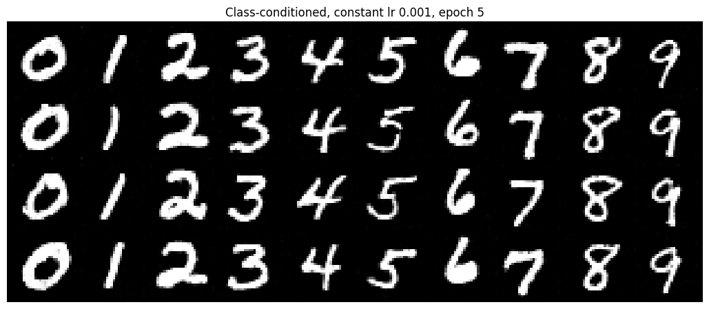